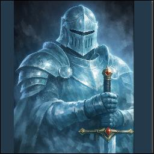

Sir Kluth
Medium Celestial (Spirit) • Lawful Good • Spectral Knight
“Stand firm. Fear not.”
Companion Tempest Company Qiran’s companion Kluth's Blade Spectral KnightFantasy Grounds NPC Record
STR
16
+3
DEX
12
+1
CON
14
+2
INT
10
+0
WIS
12
+1
CHA
14
+2
AC
16
HP
30
Speed
30 ft.
Fly
30 ft.
Reach
5 ft.
Darkvision
60 ft.
Character Discovery
Identity
- Celestial spirit
- Lawful good
- Sworn defender of the innocent
- Spirit bound to Kluth's Blade
Defenses
- Resistance to nonmagical bludgeoning damage
- Resistance to nonmagical piercing damage
- Resistance to nonmagical slashing damage
- Immune to charmed, frightened, and grappled
Communication
- Understands Common
- Speaks telepathically to the wielder
- Frequently offers encouragement
- Becomes audibly disappointed by unjustified retreat
Manifestation
- Called forth as a bonus action
- Appears within 5 feet of the wielder
- Acts immediately after the wielder
- Remains for up to 1 minute
Forge of Fury Portrayal
Sir Kluth is brave, loyal, honorable, and enthusiastic. Unlike his more comedic Ravenloft portrayal, his Forge of Fury incarnation does not emphasize clumsiness.
Sir Kluth is brave, loyal, honorable, and enthusiastic. Unlike his more comedic Ravenloft portrayal, his Forge of Fury incarnation does not emphasize clumsiness.
Actions & Reactions
Spectral Longsword. Melee Weapon Attack: +5 to hit, reach 5 feet, one target. Hit: 1d8 + 3 radiant damage.
Knightly Intercession. Once per manifestation, when a creature within 5 feet of Sir Kluth is hit by an attack, he may impose disadvantage on that attack roll.
Scaling Note
The Fantasy Grounds NPC record also notes: “Attack = primary skill Mod + Pro Bonus.” This allows Sir Kluth's attack bonus to scale with the wielder when that version of the rule is used.
The Fantasy Grounds NPC record also notes: “Attack = primary skill Mod + Pro Bonus.” This allows Sir Kluth's attack bonus to scale with the wielder when that version of the rule is used.
Voice of the Knight
- “A bold strike! Well done!”
- “Stand fast, my liege!”
- “Face me, villain!”
Sir Kluth does not merely lend strength. He expects courage, loyalty, and protection of those who cannot protect themselves.
Kluth's Blade
Weapon: Longsword, rare, requires attunement by a non-evil creature.
- Grants a +1 bonus to attack and damage rolls.
- Sheds dim light in a 10-foot radius while drawn.
- Bears a rearing lion sigil and the words, “Stand firm. Fear not.”
- Allows Sir Kluth to manifest once per long rest.
Campaign Role
- Serves as Qiran's spectral companion through Kluth's Blade.
- Provides martial support without replacing the wielder's turn.
- Acts as an encouraging moral presence within Tempest Company.
- Represents steadfast honor rather than comic relief in Forge of Fury.
Atlas Discovery Status
Fantasy Grounds NPC Record: Discovered
Kluth's Blade Player Note: Discovered
Campaign Portrayal: Confirmed by Christopher
Atlas Portal Notes: Not yet discovered for Sir Kluth
Kluth's Blade Player Note: Discovered
Campaign Portrayal: Confirmed by Christopher
Atlas Portal Notes: Not yet discovered for Sir Kluth
Evidence & Discovery Sources
🟢 VerifiedSir Kluth's statistics, defenses, senses, attack, manifestation rules, personality prompts, and connection to Kluth's Blade are based on the Fantasy Grounds campaign database.
🟡 Campaign Knowledge
Sir Kluth's Forge of Fury portrayal emphasizes sincere honor rather than the clumsy comic-relief role used for Sir Klutz in Ravenloft.
🟠 Discovery Gap
Sir Kluth's mortal life, original oath, death, and the circumstances that bound his spirit to the blade have not yet been discovered.
Companion of Qiran through Kluth's Blade — with the company, not a PC dossier. Discovery report: Qiran · Forge archive: Deep Memory · Forge chamber.